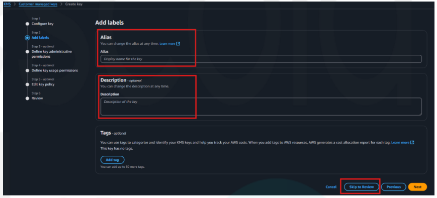

Neste laboratório prático, você aprenderá a criar e gerenciar parâmetros utilizando o AWS Systems Manager Parameter Store, incluindo parâmetros seguros criptografados com chaves do KMS (AWS Key Management Service), além de acessar os valores por meio da AWS CLI no CloudShell.
Objetivos do Laboratório:
Este laboratório ensina como:
- Criar parâmetros do tipo String e SecureString no Parameter Store.
- Criar uma chave de criptografia no KMS.
- Recuperar os parâmetros utilizando a AWS CLI, com e sem descriptografia.
- Navegar com confiança pelos principais recursos do AWS Systems Manager.
Cenário:
Você é um desenvolvedor responsável por armazenar e acessar configurações de um aplicativo, como URLs de banco de dados e senhas, de forma segura. Para isso, usará o AWS Systems Manager Parameter Store, em conjunto com o AWS KMS para criptografar dados sensíveis. Posteriormente, utilizará o AWS CloudShell para acessar esses parâmetros pela CLI.
Pré-requisitos:
- Conta AWS ativa.
- Acesso ao Console de Gerenciamento da AWS.
- Permissões para usar o Systems Manager, KMS e CloudShell.
Parte 1: Criação SSM Parameter Store
- Acesse o Console de Gerenciamento da AWS e navegue até o serviço SSM( AWS Systems Manager ).
- No painel de navegação esquerdo, localize Application Tools (Ferramentas de aplicação) e clique em Parameter store (Armazenamento de parametros).
- Clique em Create parameter (Criar parametro).
- Agora vamos criar quatro parameter store, e preencher somente os campos que estão marcado na imagem abaixo.
- Agora vamos criar dois parâmetros no Parameter Store com informações de URLs de banco de dados.
- No campo Name, insira:
- No campo Description, insira:
- No campo Type, selecione:
- No campo Value, insira:
- Clique em Create parameter (Criar parâmetro) para salvar. Anote em um bloco de notas o nome do seu parâmetro, pois você precisará dessa informação em etapas futuras.
- Repita o processo de criação do parâmetro clicando novamente em Create parameter.
- No campo Name, insira:
- No campo Description, insira:
- 14. No campo Type, selecione:
String - No campo Value, insira:
- Pronto! Agora temos dois parâmetros criados:
- Antes de criamos os outros 2 parâmetros, precisaremos cria uma chave KMS.
- Acesse o Console de Gerenciamento da AWS e navegue até o serviço KMS (AWS Key Management Service).
- Clique no botão Create a key (Criar uma chave).
- Na primeira tela, não altere nada. Clique em Next (Próximo).
-
Na segunda tela, preencha somente os campos:
- Alias:
SeuNomeSobrenome-key - Description:
SeuNomeSobrenome-key

- Alias:
- Clique em Skip to review ( pular para revisão ) e depois clique em Finish (Finalizar ).
- Volte ao serviço SSM ( AWS Systems Manager ).
- No painel de navegação esquerdo, localize Application Tools (Ferramentas de aplicação) e clique em Parameter store (Armazenamento de parametros).
- Clique em Create parameter (Criar parametro).
- No campo Name, insira:
- No campo Description, coloque a descrição:
- No campo Type, selecione a opção:
- No campo KMS key source, não altere a opção.
- No campo KMS key id, procure pela chave que foi criada no passo 16.
- No campo Value, coloque a informação:
- Clique em Create parameter (Criar parâmetro). Anote em um bloco de notas o nome do seu parâmetro, pois você precisará dessa informação em etapas futuras.
- No campo Name, insira:
- No campo Description, coloque:
- No campo Type, selecione a opção:
- No campo Value, coloque:
- Clique em Create parameter (Criar parâmetro). Anote em um bloco de notas o nome do seu parâmetro, pois você precisará dessa informação em etapas futuras.
- Acesse o Console de Gerenciamento da AWS e navegue até o serviço CloudShell ( AWS CLOUDSHELL ).
- Na tela, será exibido o terminal do AWS CLI dentro da própria plataforma da AWS. Vamos começar a executar alguns comandos.
- Na tela, será exibido o terminal do AWS CLI dentro da própria plataforma da AWS. Vamos começar a executar alguns comandos.
- Digite o seguinte comando:
- Pressione Enter.
- Verifique se o resultado exibido é semelhante ao da imagem abaixo.
- Digite o seguinte comando:
- Pressione Enter.
Criação de Parâmetros do Tipo String
Parâmetro 1 – Ambiente de Desenvolvimento
/meu-app-SeuNomeSobreNome/dev/db-url
Database URL for my app in dev
String
dev.database.SeuNomeSobrenome.com:3306
Parâmetro 2 – Ambiente de Produção
/meu-app-SeuNomeSobreNome/prod/db-url
Database URL for my app in prod
prod.database.SeuNomeSobrenome.com:3306
Anote em um bloco de notas o nome do seu parâmetro, pois você precisará dessa informação em etapas futuras.
Parte 2: Criação da Chave KMS (AWS Key Management Service)
Vamos criar mais dois Parameter Store.
Parâmetro 3 – Ambiente de Desenvolvimento
/meu-app-SeuNomeSobreNome/dev/db-password
Database password for my app in dev
SecureString
aqui é a senha do dev
Parâmetro 4 – Ambiente de Produção
/meu-app-SeuNomeSobreNome/prod/db-password
Database password for my app in prod
SecureString
aqui é a senha da prod
Ao finalizar todas as etapas, confirme que foram criados 4 parâmetros no Parameter Store: 2 do tipo String e 2 do tipo SecureString, conforme mostrado na imagem exemplo abaixo:

Parte 3: Acessar o CLI pelo Cloudshell

aws ssm get-parameters --names /meu-app-SeuNomeSobreNome/dev/db-url /meu-app-SeuNomeSobreNome/dev/db-password Observe que você deve substituir os campos destacados em amarelo pelos nomes exatos dos parâmetros que você criou nos passos anteriores.
Observe que as informações exibidas no campo “Value” estão em formatos diferentes: uma está descriptografada e a outra aparece criptografada.
Agora vamos descriptografar a informação que aparece criptografada, utilizando o mesmo comando anterior, com um acréscimo no final.
aws ssm get-parameters --names /meu-app-SeuNomeSobrenome/dev/db-url /meu-app-SeuNomeSobrenome/dev/db-password --with-decryption Observe que você deve substituir os campos destacados em amarelo pelos nomes exatos dos parâmetros que você criou nos passos anteriores.
Verifique se o resultado exibido na sua tela é semelhante ao da imagem abaixo.
Se você conseguiu executar todas as etapas, parabéns!
Não se esqueça de excluir todos os recursos criados durante este exercício para evitar cobranças desnecessárias.
Excluindo os Recursos
- Primeiro, exclua os parâmetros. Acesse novamente a tela do Systems Manager Parameter Store (Armazém de Parâmetros), procure pelos parâmetros pelo mesmo nome e sobrenome que inseriu, selecione-os e clique em Excluir.
- Depois, vá no KMS, procure pela chave com o seu nome e sobrenome e selecione-a. Após isso, clique em Ações da chave > Programar exclusão da chave.
- Mais abaixo, selecione a opção de Confirmação (Confirme se você deseja programar essas chaves para exclusão após um período de espera de 7 dias.), igual na imagem abaixo:
- Após isso, clique em Programar exclusão e pronto! Tudo finalizado!
Confirme a exclusão e em Excluir parâmetros.
Na tela seguinte, altere o Período de espera (em dias) para 7.